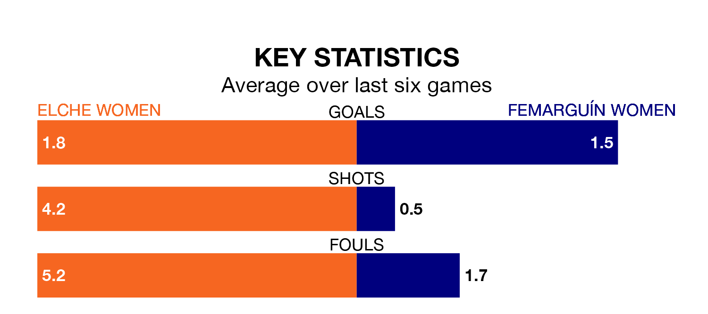

Femarguín Women travel for Saturday's early match against Elche Women looking to bounce back from defeat last time out in Segunda Federación Femenina.
Femarguín, who sit zero in the league after 17 games, fell to a 3-1 home defeat to Unión Viera Women on January 21.
They face an Elche side who also lost their last match, a 2-1 defeat to Real Unión de Tenerife Women, and who sit 13th in the table.
With 32 goals in 16 games so far this season, Elche are the league's second-highest scorers with 2.0 goals per game. But they are conceding more than average too, letting in 22 goals at a rate of 1.4 per game.
Femarguín, meanwhile, are below average scorers, with 1.0 goal per game, compared to a league average of 1.3. They have conceded 1.2 goals per game.
The hosts are in mixed form in Segunda Federación Femenina, with three wins and a draw from their last six games.
And also with three wins and a draw over that period, the away side's form is identical – they have both taken 10 points from 18.
Updated: 09:07 (UTC), 24/01/24